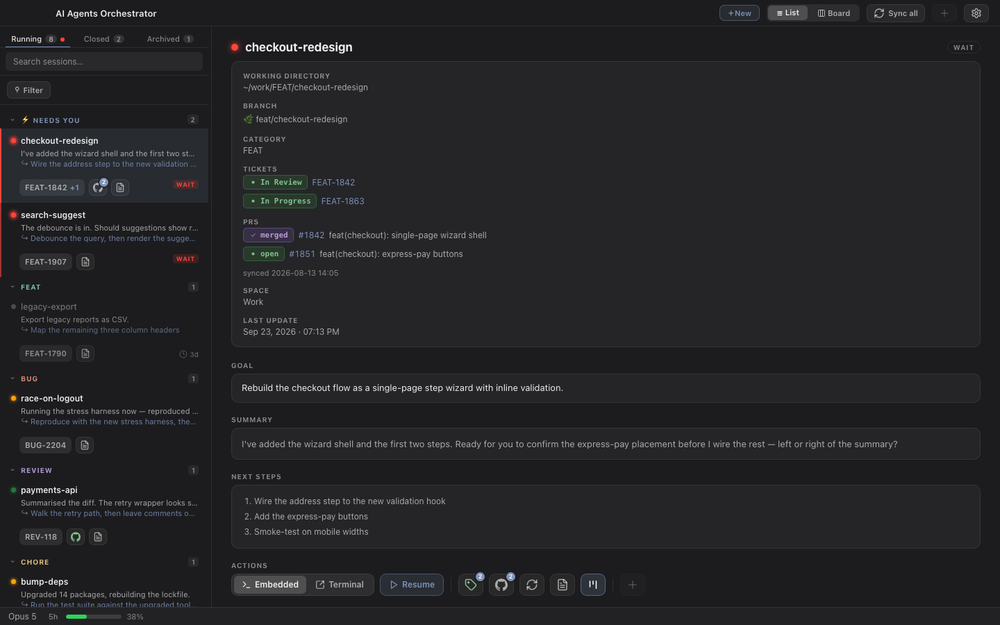
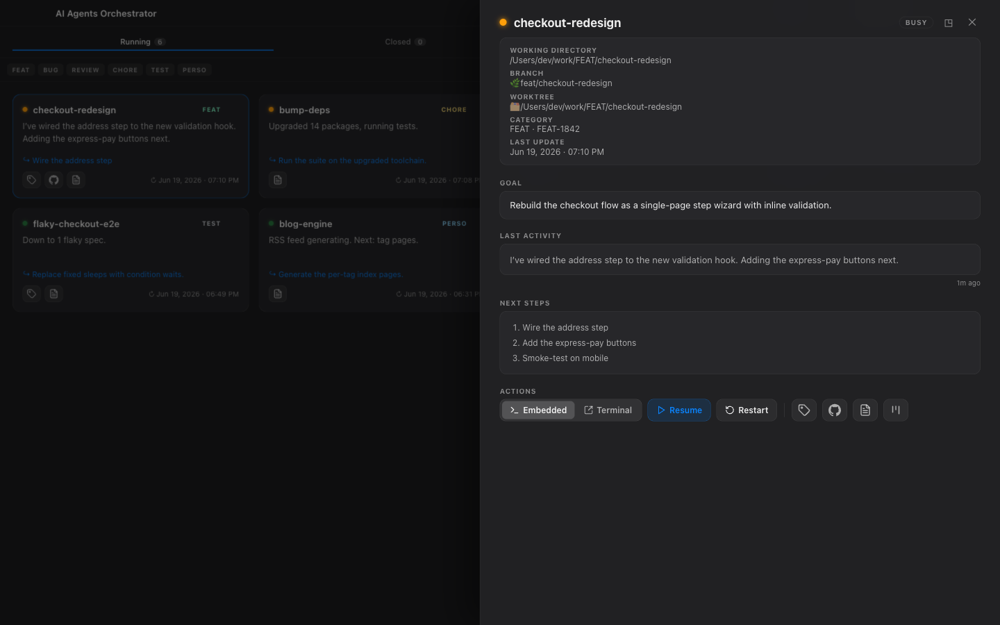
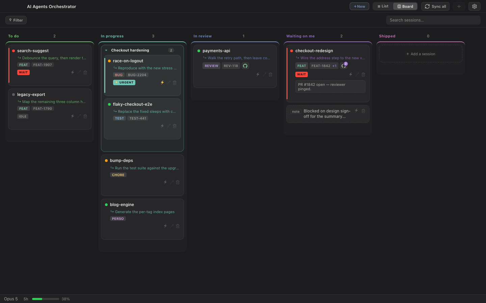
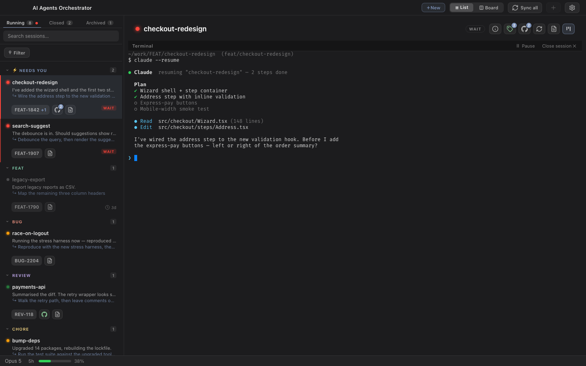
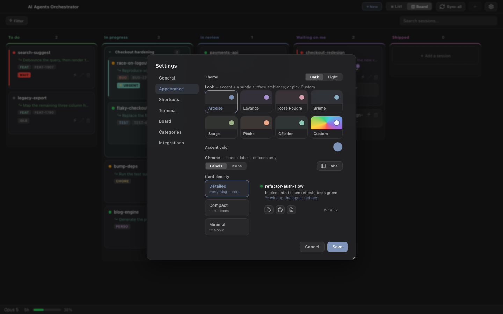
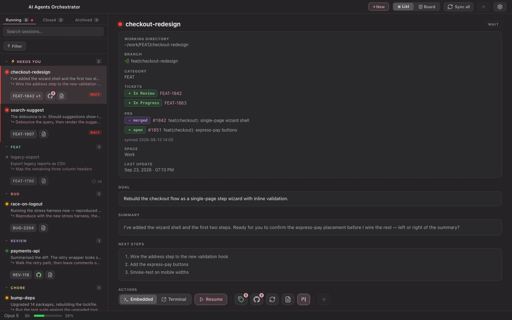
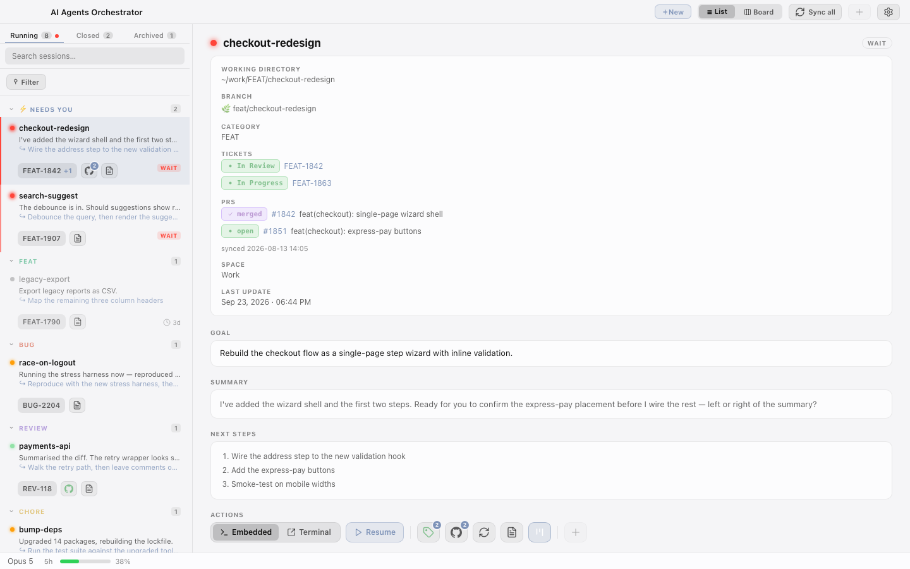

It doesn't orchestrate your agents — it orchestrates your work with them. Each Claude Code session is a living workspace (its own agents, a repo, weeks of history) — and you've got a dozen going at once.
Claude Code runs the task; this is mission control for the sessions — see which are busy, which are waiting on you, which are done across every project, and pick any one back up. Not another agent-spawner.
Free for non-commercial use · ~8 MB · runs on the system WebView, no Chromium bundled

~/.claude
Zero network calls
No secrets stored
90 tests
The problem
When you run many sessions in parallel, the bottleneck isn't the agents — it's you holding it all in your head. Which one needs an answer? Which finished an hour ago? Where does each one live?
Built for the way a lot of us actually work — a dozen threads at once, fast and a little scattered. Lay it all out in front of you, and the chaos finally works for you.
Busy, idle, waiting, stale, or a background shell — colour-coded and grouped, refreshed every 5 seconds.
Sessions waiting on your input float to the top with a pulsing marker — so nothing stalls because you forgot it existed.
Resume in an embedded terminal, pop it into its own pinned window, or jump to the branch, PR, or notes.
Three ways to look
The same live session data, rendered the way you think — a tidy list, a glanceable grid, or a full kanban cockpit.
Grouped by what matters — a "Needs you" band, then by category. Search, filter by tag, and open a rich detail panel without losing your place.
/ to search, Enter to launchA full-width grid when you want to take in everything at once — each card carries status, the latest reply, the next step, and quick links.

A kanban cockpit for steering many tracks at once. Drag to order, drop one card onto another to group them, pin notes, flag what's urgent.

Resume any session in place — a real terminal (xterm.js + a Rust pty) right inside the app. No window-juggling; pick the exact conversation back up where you left it.

Make it yours
Curated colour "looks", a custom accent, three densities, remappable keyboard shortcuts, and a proper light theme — not just an inverted dark one.



Session skills
A small set of Claude Code skills drive the lifecycle the dashboard visualizes. One command installs them.
# clone & install the skills $ git clone https://github.com/t-mercier/ai-agents-orchestrator $ cd ai-agents-orchestrator $ bash scripts/install.sh ✓ skills → ~/.claude/skills ✓ config seeded # start a tracked session, from anywhere $ claude > /start FEAT 1842 checkout-redesign ✓ workspace + notes.md created ✓ now live in the dashboard
/startCreate a session workspace + notes.md, register it, sync the repo./closeWrap up — summarise into notes.md and append a history entry./restartReload a session's context from its notes into a fresh session./archiveMark a session archived and drop it from the active list./rename-categoryRename a category everywhere — folder, notes, and config.📖 Read the full guide — session states & the Start / Resume / Restart difference →
Local-first by design
AI Agents Orchestrator is a projection of state Claude Code already writes to disk. It never phones home, and it's read-only on ~/.claude save for two explicit, sandboxed writes.
Every command spawns with separate args — no string interpolation, no injection surface.
Paths, branches and PR URLs are validated against strict patterns before use.
The two writes (archive, PR link) are atomic and confined under your configured roots.
Zero network calls. Your work, your tickets, your branches never leave the machine.
Get started
Clone it, run it, and watch your sessions line up. Requires macOS 13+, Rust + the Tauri CLI, and Claude Code.
Works with Claude Code today — GitHub Copilot and other agent CLIs are next on the roadmap.